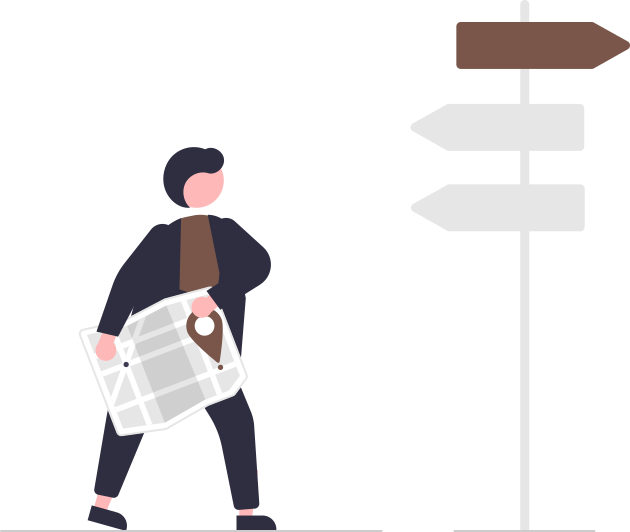
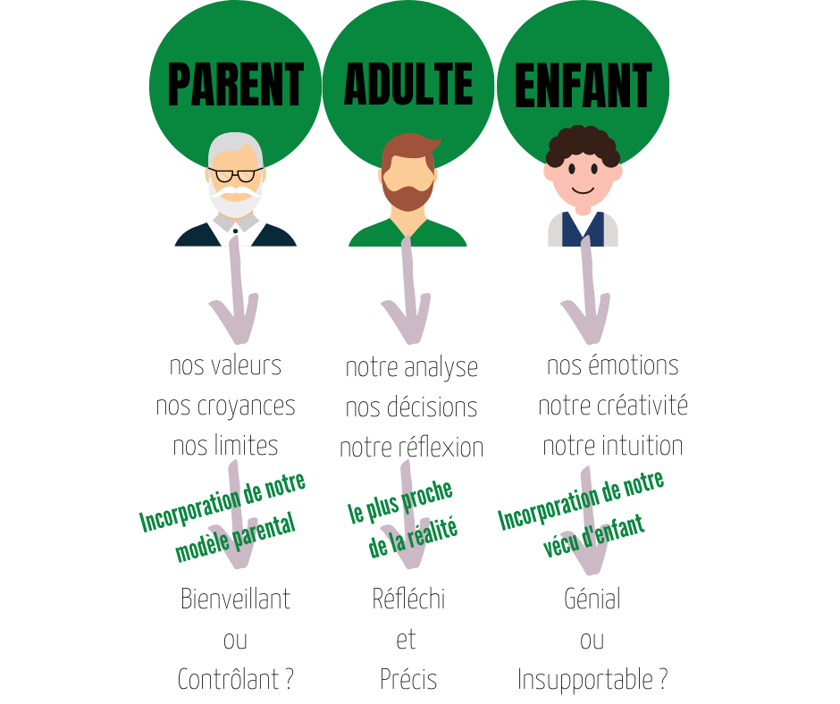

Accueil

 Ce site s'adresse au groupe d'élèves de terminale SI et NSI du lycée Notre Dame du Mur de MORLAIX pour la vie de classe, l'orientation et les projets...
Ce site s'adresse au groupe d'élèves de terminale SI et NSI du lycée Notre Dame du Mur de MORLAIX pour la vie de classe, l'orientation et les projets...

Le 05/01 (1h)#
- Poursuite du travail sur l'orientation :
- faire des
note.mddans Obsidian, une par formation, en y incluant des métadonnées (Nom, Lieu, Lien, Attendus, Processus, Dates, Coût, Débouchés, Opinion, Ordre, Questions... ) et des#tag, toutes regroupées dans un même dossier de votre coffre ; - préparer un diaporama de présentation de votre projet d'orientation à plus ou moins long terme et des plans A, B, C, ..., que vous envisagez pour l'atteindre ;
- extraire les informations utiles à l'aide de requêtes partagées Dataview pour pouvoir répondre à des questions particulières ;
- faire des
Le 16/12 (2h)#
- Eléments d'analyse transactionnelle :

-
Poursuite du travail sur l'orientation : faire des
note.mddans Obsidian, une par formation, en y incluant des métadonnées (Nom, Lieu, Lien, Attendus, Processus, Dates, Coût, Débouchés, Opinion, Ordre, Questions... ) et des#tag, toutes regroupées dans un même dossier de votre coffre pour faire des requêtes avec Dataview- Du nouveau bientôt sur Parcoursup 2023 ;
- Les sessions instat Fac à Brest se poursuivent tous les mercredis entre 14h et 16h : voir les formations présentées ;
- Les immersions en prépa à Kérichen et à Lorient
-
Vers plus de sobriété numérique : répondre au questionnaire du Défi du grand ménage numérique...
-
Activités respectives dans chaque spécialités TSI_2022-2023 ou TNSI_2022-2023 ;
Le 08/12 (1h)#
-
Vie de Classe :
- questions diverses...
- Retours partiels de conseils de classes...
-
Poursuite du travail sur l'orientation : faire des
note.mddans Obsidian, une par formation, des métadonnées (Nom, Lieu, Lien, Attendus, Processus, Dates, Coût, Débouchés, Opinion, Ordre, Questions... ) et des#tag, toutes regroupées dans un même dossier de votre coffre.- Salon SupArmor ce WE à St Brieuc ;
- Ouverture du catalogue Parcoursup 2023 le 20/12 ;
- Les sessions instat Fac à Brest se poursuivent tous les mercredis entre 14h et 16h : voir les formations présentées ;
Le 24/11 (1h)#
-
Vie de Classe :
- finir de se préparer pour la certification PIX programmée la semaine prochaine ;
- questions diverses...
-
Poursuite du travail sur l'orientation : faire des
note.mddans Obsidian, une par formation, avec des#tag, toutes regroupées dans un même dossier de votre coffre.- nouvelle ressource : https://ideo.bretagne.bzh/
Le 10/11 (1h)#
- Vie de Classe :
- Inscription au bac !
- Apporter une copie de votre attestation JDC ou recensement URGENT ‼️
- PIX :
- faire la campagne de rentrée TGT code:
SFVUCW857; - puis faire la campagne de récolte de votre profil PIX code
HCTRFS261.
- faire la campagne de rentrée TGT code:
- questions diverses...
-
Journée nationale de lutte contre le harcèlement scolaire
-
Poursuite du travail sur l'orientation :
Le 07/11#
- Tutoriel de l'application multiplateforme Obsidian ;
- Activités respectives dans chaque spécialités TSI_2022-2023 ou TNSI_2022-2023 ;
Le 17/10#
-
Bilan de la "Fête de la science" :
 ;
; -
Découverte de l'application multiplateforme Obsidian -> Synchroniser votre classeur déposé sur GitHup avec un coffre d'Obsidian localisé sur votre iPad et y apairer vos fichiers
note.ipynbavec desnote.mdgrace à jupytext dans Carnets ;
Memo de procédure de synchronisation avec GitHub sur iPad
Il y a une procédure spécifique pour Mobile (qui doit pouvoir s'appliquer également sur PC) :
- créer un dépôt sur GitHub (privé ou public) avec un petit README.md (c'est plus pratique) ;
- générer une clé d'identification sur GitHub https://docs.github.com/en/authentication/keeping-your-account-and-data-secure/creating-a-personal-access-token
- créer un nouveau coffre dans Obsidian ;
- installer et activer le plugin "Obsidian Git" https://github.com/denolehov/obsidian-git ;
- renseigner les champs password/personal access token et username dans la configuration du plugin "Obsidian Git"
- puis depuis la palette de commande choisir
Obsidian Git: Clone an existing remote repoet suivre les instructions...
-
Activités respectives dans chaque spécialités TSI_2022-2023 ou TNSI_2022-2023 ;
Le 14/10#
- Bilan de la "Fête de la science"...
- Découverte de l'application multiplateforme Obsidian
- Activités respectives dans chaque spécialités TSI_2022-2023 ou TNSI_2022-2023 ;
Le 13/10 (1h)#
- Vie de Classe :
- campagne de rentrée PIX ?
- questions diverses...
- Poursuite du travail sur l'orientation :
Le 10/10, jour J#
- "Fête de la science" dans l'atrium de 9h à 16h20...
Les 3 et 7/10 (1h + 2h)#
- Projets, objectif "Fête de la science" le lundi 10 octobre... -> Fin des préparatifs, installation le 7/10 à partir de 16h20
Le 30/09 (1h30 de préparations + 0h30 pour les revues)#
- Projets, objectif "Fête de la science" le lundi 10 octobre... -> Point d'étape oral de 5 minutes sur chaque stand : ce qu'on présentera, ce que l'on fera faire aux visiteurs, ce qui est prêt, ce qui reste à préparer...
Le 29/09 (1h)#
- Vie de Classe : Lettre aux élèves de terminale, questions diverses...
- Poursuite du travail sur l'orientation : Site du CDI onglet parcours avenir et Forum en ligne ;
- PIX : se connecter puis faire la campagne de rentrée ;
- ...
Du 16 au 26/09 (2h + 1h)x2#
- Projets, objectif "Fête de la science" le lundi 10 octobre... -> En appliquant une démarche agile, développer une médiation scientifique s'apuyant sur les sujets de vos projets
Le 15/09 (1h)#
- Vie de Classe : PIX (??), questions diverses...
- Début du travail sur l'orientation
- ...
Les 09 et 12/09 (2h + 1h)#
- Projets, objectif "Fête de la science" le lundi 10 octobre... -> En appliquant une démarche agile, Initier une TODO liste et se répartir les tâches
Le 05/09#
- Sur les heures de permanence, inscription impérative en Perm0 puis possibilité de :
- Travaux de groupes en Perm1 ;
- Travail individuel en silence en Perm0 ;
- Accès à l’Escale (foyer) et au CDI dans la limite des places disponibles.
Possibilité de dispense d’étude sur présentation d’un justificatif du responsable légal pour : code, conduite, immersions…
-
Documents à récupérer si besoin : Décharge médicale + fiche de renseignement + autorisation de sortie – charte conducteur (à l'accueil).
-
Casiers
Constituer des binômes. Liste à transmettre à Marilyne Rocher. Attendre d’avoir un casier affecté par la vie scolaire (affichage rapide dans l’atrium).
-
Livres
A chercher en Perm1 en respectant le planning diffusé par la Vie Scolaire. Faire noter les n° des manuels aux élèves dans l’agenda et compléter le fichier Excel envoyé par Anaïs BOUGUYON.
-
Noter les dates importantes dans l’agenda et commenter si nécessaire
- Photos de classe le 09/09 ;
- Réunion d'informations pour l'AS le 12/09 à 12h30 ;
- Réunion d’information aux parents : le 14/09 en 1GT et 15/09 en TGT à 18h. Courrier à remettre ;
- Réunions individuelles (TGT rdv avec PR si besoin ou demande) ;
- Election des délégués : semaine du 14/09 ;
- Pas de conseil de profs mais un questionnaire à lancer aux profs pour savoir les situations à surveiller ;
- Période de bacs blancs : semaine B8 - A9 ;
- Fin du 1er trimestre : le 25/11 ;
- Conseils de classe du 1er trimestre : semaine du 30/11 ;
-
Fiche de renseignements pour l'orientation...
- Projets, objectif "Fête de la science" début octobre... -> Initier un dépot pour votre projet sur GitHub
Le 02/09#
- Accueil
- Présentation du professeur principal-référent
-
Rappels
- Self
- Pas de vérification des régimes pour l’instant
- Explications : EXT, DP4 (pas le mercredi), DP5, INT, BOX. Changement possible au + vite (fin semaine B2). Rappel : engagement pris pour toute l’année.
- Distribution cartes de self + consignes.
Remarques : Possibilité de déjeuner au self ou à la cafétéria. Inscription possible pour les externes avant 9h à l’entrée de la Perm0.
- Distribution et présentation du carnet de correspondance à compléter et à conserver sur soi toute l’année.
-
Lecture du règlement intérieur
La zone fumeurs n’est accessible qu'aux récréations.
Ce document est accessible, comme d'autres, depuis la page informations-pratiques du site du lycée -
Présentation des ressources informatiques : ENT, Drive, Ecole Directe
Précision sur Ecole Directe ou panneau d’affichage pour les modifications d’EDT. Nécessité de consulter panneau d’affichage quotidiennement.
Identifiant école directe : les élèves utilisent leur propre identifiant et pas le compte “famille”.
Certificat de scolarité accessible sur Ecole Directe. -
ASSR2 (passé normalement en 3e) ?
-
Options et emploi du temps
- Vérification des options
En cas d’erreur, barrer en rouge et modifier sur document papier puis le déposer dans le casier du coordinateur de niveau pour vérification et validation. Pas de changement accepté par rapport aux choix faits à l’inscription.
- Distribution EDT individuels élèves + Informer les élèves concernés par des anomalies (liste définie en réunion PP)
- Vérification des options